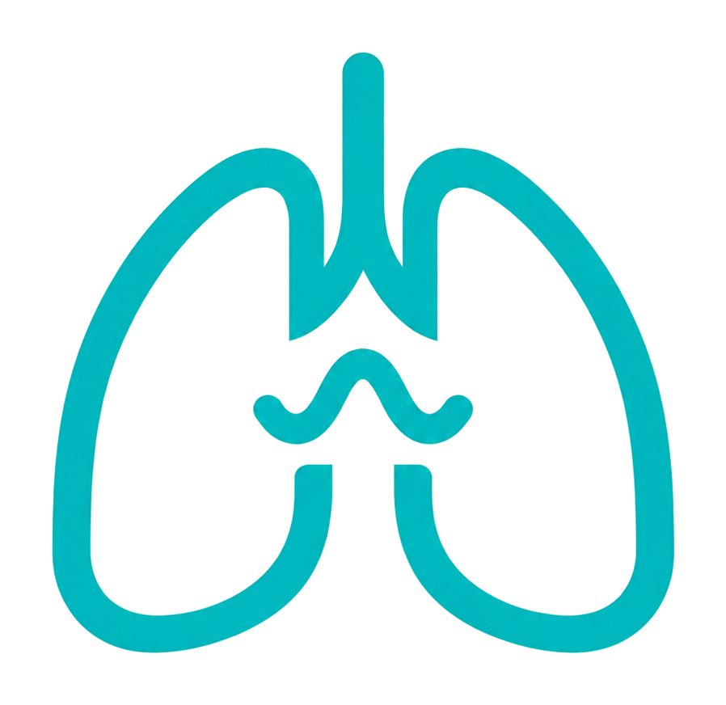
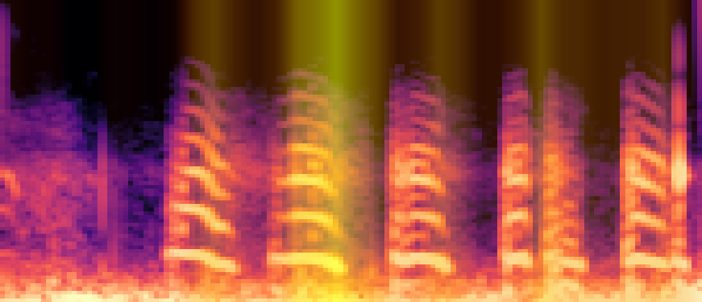
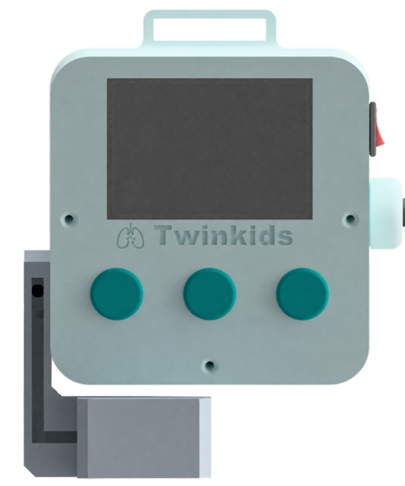
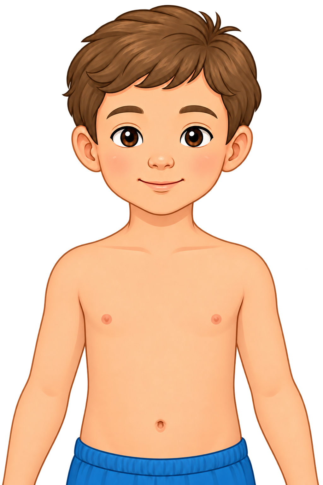

Mulai Pemeriksaan Baru
Sambungkan dengan perangkat fisik Twinkids untuk memulai skrining risiko pneumonia balita secara real-time.
Suara mengerang pendek saat menghembuskan napas.
POSTERIOR
(PUNGGUNG)
ANTERIOR
(DADA)
Posisi Pasien
Pastikan pasien duduk tegak dan tenang. Area dada dan punggung dapat diakses dengan mudah.
Lingkungan Tenang
Kurangi kebisingan di sekitar ruangan untuk memastikan kualitas rekaman auskultasi optimal.
Kontak Stetoskop
Tempelkan kepala stetoskop langsung ke kulit dada untuk hasil optimal. Kontak melalui kain tipis masih dapat diterima bila diperlukan, namun hindari lapisan kain tebal.
Operasikan perangkat fisik Twinkids untuk merekam suara paru. Layar ini mengikuti secara otomatis.
Sistem sedang Menganalisis...
Sistem sedang menganalisis suara paru dan parameter lainnya untuk skrining risiko pneumonia balita.
Harap tidak menutup layar ini hingga analisis selesai untuk akurasi data maksimal.
Tinjauan faktor klinis yang mendasari hasil skrining risiko pneumonia.

Grad-CAM CNN 1D dioverlay pada mel-spektrogram sampel auskultasi yang dipakai pada sesi ini.
Interpretasi Klinis
Memuat interpretasi...

